금속재료기사 (2021-08-14 기출문제)
1과목: 금속조직학
1. 그림과 같은 상태도를 가진 2성분계에서 C조성을 가진 합금을 평형 냉각하여 온도 Ta에 이르렀을 때 β상과 α상의 중량비(β/α)는? (단, Ca는 온도 Ta에서 α상의 조성 Cβ는 온도 Ta에서 β상의 조성)
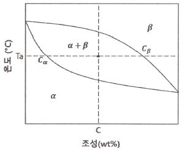
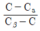
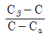
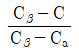
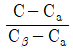
(정답률: 59%)

2. 다음 상태도에서 70wt%A-30wt%B인 합금을 Tc온도까지 열을 가한 뒤 0℃까지 냉각시켰을 때, 합금의 조직은?
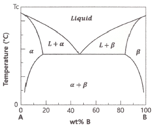
- 초정(β) + 석출(α)
- 초정(α) + 공정(α+β)
- 초정(β) + 공정(α+β)
- 초정(α) + 석출(β)
(정답률: 62%)
3. 마텐자이트 변태의 특징에 대한 설명으로 틀린 것은?
- 무확산 변태이다.
- 조성의 변화를 수반하면서 변태를 한다.
- 마텐자이트는 고용체의 단일상이다.
- 마텐자이트가 생성되면 모상의 표면에 기복이 생긴다.
(정답률: 56%)
4. 장범위규칙도가 1인 합금은?
- 완전 불규칙 고용체이다.
- 불완전 규칙 고용체이다.
- 완전 규칙 고용체이다.
- 불완전 불규칙 고용체이다.
(정답률: 75%)
5. 다음 중 2차 재결정과 같은 과정은?
- 회복
- Ac1변태
- 핵의 생성
- 이상결정성장
(정답률: 58%)
6. 대형 잉곳의 주조조직에 대한 설명으로 틀린 것은?
- 주상정은 수지상정이 성장하여 생성된 조직인 경우가 많다.
- 가장자리에서 결정립의 크기가 가장 미세하다.
- 내부에는 조대한 등축정이 존재한다.
- 칠층의 결정립이 가장 조대하다.
(정답률: 66%)
7. 공석강을 오스테나이트화한 후 급냉하여 마텐자이트 조직을 얻었을 때 치수 변화는?
- 수축한다.
- 팽창한다.
- 일정하지 않다.
- 변화하지 않는다.
(정답률: 59%)
8. 2원계 상태도에서 공정점의 상의 수는? (단, 압력은 1atm으로 일정하다.)
- 0
- 1
- 2
- 3
(정답률: 54%)
9. Fe-Fe3C 상태도에서 순철의 동소변태점은 몇 개인가?
- 0
- 1
- 2
- 3
(정답률: 60%)
10. 금속의 냉간가공도와 재결정에 대한 설명으로 옳은 것은?
- 항온풀림하면 가공도가 낮을수록 재결정이 더욱 빨리 일어난다.
- 1시간 동안에 재결정을 완료하는 온도는 가공도가 낮을수록 더욱 낮다.
- 항온풀림하면 가공도가 높을수록 재결정이 더욱 빨리 일어난다.
- 1시간 동안에 재결정을 완료하는 온도는 가공도가 높을수록 더욱 높다
(정답률: 55%)
11. 탄소의 고농도 부근에서 마텐자이트의 경도가 탄소의 농도에 비례하여 직선적으로 증가하지 못하는 이유는?
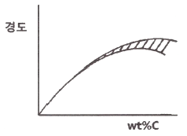
- 탄소가 많으면 담금질 시 Fe3C가 생성하기때문이다.
- C가 많으면 담금질 시 C가 석출하기 때문이다.
- 잔류 오스테나이트가 많아지기 때문이다.
- 담금질 시 ε-Carbide가 생성되기 때문이다.
(정답률: 63%)
12. 규칙-불규칙 변태에서 규칙 격자가 생길 때 일반적으로 감소하는 성질은?
- 전기전도도
- 강도
- 연성
- 경도
(정답률: 58%)
13. 전위에 관한 설명으로 틀린 것은?
- Edge 전위의 버거스 벡터는 전위선과 평행하다.
- Screw 전위는 뒤틀림을 일으키는 전단응력에 의해서 발생한다.
- 혼합 전위의 전위선은 곡선으로 나타난다.
- 나선전위를 Screw 전위라고 한다.
(정답률: 56%)
14. 금속의 재결정 후 변화된 기계적 성질에 대한 설명으로 옳은 것은?
- 경도가 커진다.
- 연신율이 작아진다.
- 인장강도가 커진다.
- 탄성한도가 작아진다.
(정답률: 44%)
15. 격자 결함 중 면결함에 해당되는 것은?
- 원자공공
- 적층 결함
- 프렌켈 결함
- 전위
(정답률: 72%)
16. BCC 격자에서 (110), (101) 두 면이 교차하는 방향은?
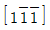
- [111]
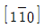
- [110]
(정답률: 47%)
17. 결정구조 중 사방정계의 축길이와 축각으로 옳은 것은?
- a=b=c, α=β=γ=90°
- a≠b≠c, αα=ββ=γγ=90°°
- a≠b=c, α=β=90°, γ=120°
- a≠b≠c, α=β=90°, γ=120°
(정답률: 52%)
18. 0.5wt% 탄소강이 A1선 직상에서 평형상태를 유지하고 있는 경우 미세조직을 구성하고 있는 상 성분의 양은? (단, α의 탄소함유량은 0.025wt%, 공석점의 탄소함유량은 0.8wt%이다.)
- 페라이트 12%, 오스테나이트 88%
- 페라이트 18%, 오스테나이트 82%
- 페라이트 27%, 오스테나이트 73%
- 페라이트 39%, 오스테나이트 61%
(정답률: 56%)
19. 순철의 동소변태에 대한 설명으로 틀린 것은?
- 비중의 변화가 없다.
- α, γ, δ의 동소체가 존재한다.
- 결정구조의 변화가 일어난다.
- 성질 변화는 일정한 온도에서 급격히 비연속적으로 일어난다.
(정답률: 42%)
20. 공석강을 오스테나이트화한 후 Ms점보다 50℃ 높은 온도로 급히 냉각시킨 다음 그 온도에서 항온처리 했을 때 얻을 수 있는 조직은?
- 펄라이트
- 페라이트
- 베이나이트
- 마텐자이트
(정답률: 60%)
2과목: 금속재료학
21. 다음 중 주성분이 Cu와 Zn이 아닌 것은?
- Tombac
- Muntz metal
- Naval brass
- Platinite
(정답률: 50%)
22. 온도에 따른 치수의 변화가 큰 바이메탈용 합금에 해당되지 않는 것은?
- Mn-Cu-Ni
- Fe-Ni-Mn
- Al-Cu-Mg
- Fe-Ni-Cr
(정답률: 61%)
23. 원자력발전에 사용되는 금속으로 비중이 19.1, 융점이 1129℃인 것은?
- 우라늄
- 토륨
- 세슘
- 지르코늄
(정답률: 66%)
24. 탄소강에 합금원소를 첨가하여 합금강을 만드는 목적이 아닌 것은?
- 열처리의 질량효과를 높인다.
- 저온에서의 충격강도를 높인다.
- 고온에서의 내열성을 개선한다.
- 부식 환경에서의 내식성을 개선한다.
(정답률: 61%)
25. 합금원소가 주철의 조직과 성질에 미치는 영향에 대한 설명으로 틀린 것은?
- Si는 Fe3C를 분해하여 흑연화하는 원소이다.
- Cu는 페라이트에 고용되며, 흑연화를 저지시킨다.
- Ni은 흑연화를 돕고 탄화물의 생성을 저지하여 칠(chill)방지에 효과적이다.
- V은 흑연화를 방해하는 원소이며, 주철기지인 펄라이트를 치밀하게 하고, 흑연을 미세하게 하여 인장강도를 높인다.
(정답률: 38%)
26. 다음 중 금속분말의 유동도에 영향을 미치는 요소와 가장 거리가 먼 것은?
- 분말의 형태
- 분말의 입도분포
- 분말의 화학조성
- 분말의 표면거칠기
(정답률: 52%)
27. 다음 중 Fe-Fe3C 상태도에서 오스테나이트 영역을 확대시키는 성분은?
- Mn
- Cr
- Ti
- Al
(정답률: 61%)
28. 다음 중 탄소의 함량이 가장 높은 소재는?
- STC 120
- STC 60
- SM50C
- SM20CK
(정답률: 55%)
29. 다음 중 석출경화계 스테인리스강은?
- STS304L
- STS420J1
- STS430F
- STS631J1
(정답률: 45%)
30. 다음 중 열전도도가 가장 높은 재료는?
- Cu
- Ag
- Au
- Pt
(정답률: 42%)
31. 다음 중 양백(Nickel Silver)에 대한 설명으로 옳은 것은?
- 10~20%Ag를 포함한 청동합금이다.
- 10~20%Ni를 포함한 구리아연합금이다.
- 10~20%Au과 5%Ag를 포함한 청동합금이다.
- 10~20%Mn과 5%Ag를 포함한 청동합금이다.
(정답률: 51%)
32. 다음 중 강재의 불꽃시험에서 강재의 탄소함량에 따른 유선 및 파열의 결과로 옳지 않은 것은?
- 탄소의 함량이 높을수록 파열의 모양은 복잡해진다.
- 탄소의 함량이 증가함에 따라 유선의 색깔은 변화한다.
- 탄소의 함량이 높을수록 유선의 굵기는 가늘어진다.
- 탄소의 함량이 높을수록 유선의 길이는 길어진다.
(정답률: 52%)
33. 다음 중 마텐자이트 조직의 경도가 큰 이유와 가장 거리가 먼 것은?
- 결정의 미세화
- 급냉으로 인한 내부 응력
- 탄소 원소에 의한 Fe 격자의 강화
- 확산변태에 의한 시멘타이트의 분리
(정답률: 51%)
34. 체심정방구조를 가지며, 오스테나이트화된 Fe-C 합금이 급랭될 때 생성되는 조직은?
- 레데뷰라이트
- 펄라이트
- 마텐자이트
- 스페로이다이트
(정답률: 54%)
35. 다음 중 철강 재료의 피로 특성을 개선하기 위한 처리방법이 아닌 것은?
- 가공 시 표면에 노치가 없도록 한다.
- 침탄처리, 질화처리 등 표면경화 처리를 한다.
- 재료의 심부에 압축 잔류 응력을 남긴다.
- 부식성 분위기에서 사용될 경우에는 방식용 도금을 한다.
(정답률: 66%)
36. 다음 중 Pb가 포함된 베어링 합금이 아닌 것은?
- Kelmet
- White metal
- Bahn metal
- Monel metal
(정답률: 47%)
37. 두랄루민의 주성분으로 옳은 것은?
- Al-Si-Mg-Mn
- Al-Cu-Mg-Mn
- Al-Zn-Mg-Mn
- Al-Ni-Mg-Mn
(정답률: 53%)
38. 다음 중 Mg에 대한 설명으로 틀린 것은?
- 비중은 약 1.74 정도이며, 조밀육방격자를갖는다.
- 기계적 절삭성은 나쁘나, 산이나 염류에 대한 내식성은 매우 우수하다.
- 감쇠능이 우수하여 소음방지 구조재로 사용가능하다.
- 마그네슘의 원료로는 Magnesite가 있다.
(정답률: 58%)
39. 다음 Fe-Fe3C 상태도에 관한 설명으로 틀린 것은?
- Ledeburite 조직은 γ와 Fe3C의 혼합조직이다.
- 표준 조직에서 ferrite, pearlite, cementite의체적비는 탄소함량에 따라 결정된다.
- 상온에서 α가 고용할 수 있는 최대 탄소함량은 약 0.008% 정도이다.
- 강 중의 탄소는 보통 Fe3C로 존재하는데, 이것은 상온이하 저온에서 쉽게 분해된다.
(정답률: 57%)
40. Babbite Metal에 대한 설명으로 옳은 것은?
- 주석을 주성분으로 하고 구리 및 안티몬을첨가한 주석계 화이트메탈이다.
- 납을 주성분으로 하고 주석 및 안티몬을 첨가한 납계 화이트메탈이다.
- 아연을 주성분으로 하고 구리 및 주석을 첨가한 아연계 화이트메탈이다.
- 구리를 주성분으로 하고 납 및 주석을 첨가한 구리계 화이트메탈이다.
(정답률: 50%)
3과목: 야금공학
41. 다음 중 염기성 내화물에 해당되는 것은?
- 규석질
- 납석질
- 샤모트질
- 돌로마이트질
(정답률: 53%)
42. 다음의 설명과 관계있는 것은?
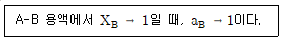
- Henry의 법칙
- Raoult의 법칙
- Darken의 법칙
- Freundlich의 법칙
(정답률: 57%)
43. 다음 중 내화물의 구비조건과 가장 거리가 먼 것은?
- 고온에서 휘발성이 강할 것
- 고온에서 용융, 연화하지 않을 것
- 슬래그 및 가스에 대하여 화학적으로 안정할 것
- 열충격과 마모에 강할 것
(정답률: 56%)
44. 탄소 36kg이 완전 연소할 때 생성되는 CO2가스의 체적은 약 몇 m3인가? (단, 0℃, 1기압을 기준으로 한다.)
- 32.3
- 54.7
- 67.2
- 95.4
(정답률: 48%)
45. 다음 관계식의 명칭으로 옳은 것은?
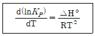
- 헨리의 식
- 반트 호프의 식
- 깁스 라울의 식
- 클라우시우스 클레페이론식
(정답률: 41%)
46. 주어진 표의 조건을 이용하여 CO 가스의 산화반응인 CO(g) +
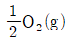
= CO2(g)의 298K 에서의 반응열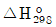
를 구하면 약 몇 kJ/mol인가?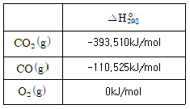
- -282.985
- 282.985
- -172.460
- 172.460
(정답률: 45%)
47. 전로에서 사용되는 냉각제가 아닌 것은?
- Mill Scale
- 소결광
- 철광석
- 용선
(정답률: 47%)
48. 다음은 A, B, C, D 기체의 반데르발스 상수값(a, b)을 각각 나타낸 것일 때, 다음 중 임계온도가 가장 높은 기체는?
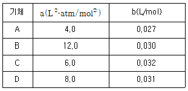
- A
- B
- C
- D
(정답률: 49%)
49. 이상 기체의 내부 에너지에 대한 설명으로 옳은 것은?
- 내부 에너지는 온도만의 함수이다.
- 내부 에너지는 압력만의 함수이다.
- 내부 에너지는 압력 및 온도의 함수이다.
- 내부 에너지는 온도 및 체적의 함수이다.
(정답률: 40%)
50. 1기압, 25℃에서 0.9mol의 물질A에 0.1mol의 물질B를 용해하여 이상용액(ideal solution)을 만들 때, 이상용액의 혼합자유에너지는 약 몇 J인가? (단, 물질B는 물질A에 이상적으로 용해되며, 기체상수는 8.314J/molㆍK이다.)
- -1177
- -8⑤
- -486
- -150
(정답률: 43%)
51. 가스 중 CO가 21.0 vol%이고, CO2가 12.0 vol%일 때, 이 가스 1m3 중의 탄소량은? (단, 0℃, 1기압이며, 나머지 성분에는 탄소가 없다고 가정한다.)
- 0.1768kg
- 0.2578kg
- 0.4527kg
- 0.6721
(정답률: 35%)
52. 2원계 고용상에서 한 원소의 활동도를 알 때, 다른 원소의 활동도를 알아내는데 유용한 관계식?
- Gibbs - Duhem식
- Gibbs - Helmholtz식
- Gibbs – Thompson식
- Van’t Hoff식
(정답률: 42%)
53. 다음 중 코크스에 대한 설명으로 틀린 것은?
- 점결성을 가진 석탄을 원료탄이라 한다.
- 코크스화성이 큰 것을 강점결탄이라 한다.
- 생성된 괴의 강도를 좌우하는 성질을 코크스화성이라 한다.
- 석탄을 건류할 때 괴상의 코크스가 되는 성질을 역천성이라 한다.
(정답률: 49%)
54. 298K, 1mol의 이상기체를 1atm에서 400atm으로 압축할 때 발생하는 깁스 자유에너지 변화는 약 몇 J인가? (단, 기체상수는 8.314J/molㆍK이다.)
- 14844
- 15844
- 24844
- 25844
(정답률: 34%)
55. 적철광 내 산소는 약 몇 wt%인가?
- 67
- 30
- 28
- 16
(정답률: 45%)
56. 구리 127g을 27℃에서 927℃까지 대기압 하에서 가열하는데 필요한 열량은 몇 cal인가? (단, 구리의 원자량은 63.5, 등압열용량은(CP)은 5.4cal/℃ㆍmol이다.)
- 6480
- 9720
- 14580
- 2⑤86
(정답률: 35%)
57. 1mol의 고체A를 등압 하에 300K에서 500K로 가열하면 엔트로피 변화(ΔS)는 약 몇 J∙-1인가? (단, 고체A의 CP는 51.5J∙-1∙mol-1이다.)
- 9.9
- 18.3
- 26.3
- 34.9
(정답률: 32%)
58. 40℃에서 1mol의 이상기체를 10L에서 500L로 가역등온 팽창시켰을 때, 엔트로피변화량(ΔS)은 약 몇 J/mol∙K인가? (단, 기체상수는 8.314J/molㆍK이다.)
- 17.120
- 20.999
- 32.525
- 51.668
(정답률: 43%)
59. 다음 중 열역학 제 1법칙과 가장 관련 있는 것은?
- 포화증기압
- 열의 이동방향
- 실내의 습도
- 에너지의 보존
(정답률: 64%)
60. 일정한 압력 하에서 온도가 올라감에 따라 평형상수가 증가하는 반응은?
- 발열반응이다.
- 반응열이 0이다.
- 흡열반응이다.
- 단열반응이다.
(정답률: 48%)
4과목: 금속가공학
61. 만네스식 압연기로 만들 수 있는 제품으로 가장 적합한 것은?
- 형재
- 봉재
- 판재
- 관재
(정답률: 43%)
62. 총길이 LT, 표점거리 L0 두께 T인 판상의 인장시편을 인장시험기에서 V(mm/s)의 크로스 헤드(cross head) 속도로 인장시험 하였을 때 인장시험 중의 공칭 변형률속도는?
- V/L0
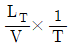
- V/LT
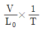
(정답률: 38%)
63. 초소성 및 변형률 속도감도(m)에 대한 설명으로 틀린 것은?
- 초소성금속은 m의 값이 크다.
- 초소성금속의 결정립은 매우 미세하다.
- m이 작으면 국부수축에 대한 저항이 크다.
- 초소성은 고온과 낮은 변형속도에서 나타난다.
(정답률: 52%)
64. 소성체 경계의 표면에서 최대 전단응력방향과 일치하는 슬립선은 주응력 방향과 몇 도를 이루며 일어나는가?
- 0°
- 45°
- 60°
- 90°
(정답률: 53%)
65. 다음의 응력(σ)-변형률(ε) 곡선 중에서 강완전소성체를 나타내는 것은?
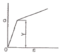
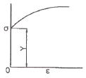
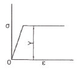
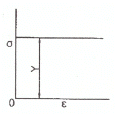
(정답률: 52%)
66. 샤르피 충격시험에서 해머를 올렸을 때의 각도를 α, 시험편 파단 후의 각도를 β라고 할 때, 충격흡수 에너지를 구하는 식은? (단, W는 해머의 무게, R은 해머의 회전축 중심에서 무게 중심까지의 거리이다.)
- WR(cosα-1)
- WR(cosβ-1)
- WR(cosβ-cosα)
- WR(cosα-cosβ)
(정답률: 61%)
67. 다음 중 열피로를 감소시키기 위한 방안과 가장 거리가 먼 것은?
- 열팽창계수가 작은 재료를 선택한다.
- 탄성계수가 작은 재료를 선택한다.
- 열전도도가 작은 재료를 선택한다.
- 피로강도가 큰 재료를 선택한다.
(정답률: 41%)
68. 금속재료에 균일한 인장하중을 가하여 제거한 후 다시 이와 반대 반향으로 압축하중을 가하면, 전보다 작은 응력에서 항복이 생기는 것은?
- Peening 효과
- 바우싱거 효과
- 가공경화 효과
- 크리프 효과
(정답률: 56%)
69. HCP 결정구조에서 완전 전위의 Burgers 벡터는?
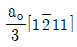
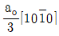
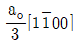
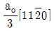
(정답률: 44%)
70. BCC 구조에서 쌍정이 잘 생성되는 면과 방향은?
- (111), [112]
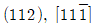
- (110), [111]
- (111), [110]
(정답률: 32%)
71. 기계적인 잔류응력측정법 중 재료의 탄성이 균일하며 잔류응력이 면에 따라서 변하지 않고 두께에 따라서만 변화한다고 가정하여 얇은 판의 표면에 2축 잔류 응력을 결정하는데 이용되는 측정법은?
- γ - Ray 방법
- Bauer – Heyn 방법
- Treuting – Read 방법
- Sachs 중공 방법
(정답률: 50%)
72. Ni계 내열 재료에서 주로 이용되는 효과적인 강화 기구는?
- 고용강화
- 석출강화
- 분산강화
- 결정입계 강화
(정답률: 32%)
73. 크리프의 곡선에 대한 설명으로 틀린 것은?
- 1단계 크리프는 변형률이 점차 증가하는 단계이다.
- 2단계 크리프는 정상크리프라고도 한다.
- 3단계 크리프는 시편의 유효단면적이 감소하는 단계이다.
- 3단계 크리프는 가속 크리프라고도 한다.
(정답률: 44%)
74. 어떤 재료의 전단탄성계수(G), 프아송 비(ν), 영률(E)의 관계로 옳은 것은?
- G=3E(1-ν)
- G=3E(1+ν)
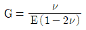
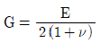
(정답률: 53%)
75. 최대 전단응력 항복조건과 관련이 가장 깊은 것은?
- Tresca
- Frank
- Cottrell
- Lattice
(정답률: 54%)
76. 압연 공정에서의 압하율은? (단, 롤러 통과 전, 후의 두께는 각각 h0, h1이다.)
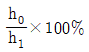
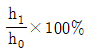
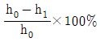
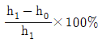
(정답률: 52%)
77. 항복곡면에 대한 설명으로 틀린 것은?
- 응력상태가 항복곡면의 한 점일 때 항복이일어난다.
- 평형상태에 있는 어떠한 응력상태도 항복곡면 밖에서는 존재할 수 없다.
- 응력상태가 항복곡면으로 둘러싸여 있을 때항복이 일어난다.
- Von Mises와 Tresca의 항복조건을 응력공간에 표시하여 만든 하나의 면이다.
(정답률: 43%)
78. 취성 금속재료의 파괴가 표면 조건에 따라 민감하게 변화하는 현상은?
- 조폐(Joffe) 효과
- 스즈키(Suzuki) 효과
- 변형률 민감도 효과
- 텍스쳐(texture) 효과
(정답률: 49%)
79. 주석울음(tin-cry) 현상은 어느 변형에 속하는가?
- 슬립변형
- 쌍정변형
- 탄성변형
- 마텐자이트변형
(정답률: 50%)
80. 냉간가공 시 재료에 나타나는 특징에 대한 설명으로 틀린 것은?
- 전위밀도가 증가하여 강도가 커지며, FCC는 BCC보다 경화가 크다.
- 냉간가공으로 생긴 압축잔류응력은 피로강도의 향상에 효과적이다.
- 집합조직이 형성되어 이방성이 나타난다.
- 항복점연신을 나타내는 강에 항복점 이상의 냉간가공을 하면 항복점과 항복점연신이 증가한다.
(정답률: 44%)
5과목: 표면공학
81. 건식도금에서 사용하는 증발원에 대한 설명으로 틀린 것은?
- 고체 증발원은 가열에 의해 기화시켜 사용한다.
- 액상의 증발원은 물을 많이 이용하며 수증기상태로 만들어 사용한다.
- 기체 증발원은 봄베를 통해 직접 연결하여사용하기도 한다.
- 증발원 종류는 고상, 액상, 기상으로 3가지가 있다.
(정답률: 50%)
82. 질화 열처리에 있어서 Fe-Ni계 평형 상태도에 나타나는 Fe-N 화합물 중에서 면심입방정의 결정구조를 가지고 있는 상은?
- Fe16N2
- Fe4N
- Fe3N
- Fe2N
(정답률: 44%)
83. 강재를 산화성 분위기에서 가열할 경우 발생하는 결함이 아닌 것은?
- 산화
- 탈탄
- 질화
- 국부적 연소
(정답률: 45%)
84. 와트(Watts)의 도금액의 성분이 아닌 것은?
- 황산니켈
- 붕산
- 질산니켈
- 염화니켈
(정답률: 33%)
85. 다음 중 진공 열처리 시 증기압 차이에 의해 증발이 가장 잘 되는 금속 원소는?
- Mn
- Ni
- Co
- W
(정답률: 36%)
86. 다음 중 강의 경화능을 시험하는 방법은?
- 염수분무시험에 의한 방법
- 조미니 시험에 의한 방법
- 캐스 시험에 의한 방법
- 샤르피 시험에 의한 방법
(정답률: 49%)
87. 이온플레이팅(ion plating)법에 대한 설명으로 틀린 것은?
- 피막의 밀착성이 좋다.
- 기지는 음극으로 대전되어 있다.
- 비교적 저온(500~550℃)에서 처리하며 밀착성이 좋은 초경질 피막을 얻을 수 있다.
- 폐수가 발생하므로 폐수처리 시설이 필요하다.
(정답률: 48%)
88. 다음 중 미세한 아연 분말 속에 강재를 묻고, 300~400℃에서 장시간 처리하여 아연을 침투시켜 내식성을 향상시키는 처리는?
- 세라다이징
- 칼로라이징
- 크로마이징
- 보로나이징
(정답률: 50%)
89. 고탄소강은 표면처리 공정에서 수소취성을 일으킬 수가 있다. 수소취성을 최소화하기 위한 표면처리 공정이 아닌 것은?
- 전해탈지는 양극탈지를 사용한다.
- 산처리를 할 때 되도록 짧은 시간에 산세하도록 한다.
- 침지 탈지 후 전해탈지는 음극탈지를 사용한다.
- 산처리 시 부식 억제제를 첨가한다.
(정답률: 42%)
90. PVD법에서 저항발열원으로 사용하는 내열성 금속이 아닌 것은?
- W
- Cu
- Mo
- Ta
(정답률: 52%)
91. 방식피막을 만들어주는 방법이 아닌 것은?
- 유기도장하는 방법
- 내식성 금속 피막을 입히는 방법
- 화성피막을 금속표면에 만들어 주는 방법
- 고온에서 산화시키는 방법
(정답률: 51%)
92. 전자현미경이 광학현미경에 비하여 분해능이 좋은 이유는?
- 전자파가 가시광선에 비하여 에너지가 작기때문에
- 물질표면으로 전자파의 투과력이 가시광선에 비하여 크기때문에
- 전자의 입자크기가 가시광선의 입자크기보다 작기 때문에
- 전자파의 파장이 가시광선의 파장보다 짧기 때문에
(정답률: 48%)
93. 양극산화 두께 측정법 중 비파괴식 두께 측정법은?
- 와전류에 의한 방법
- 산화피막 용해에 의한 방법
- 절단 시험편을 통한 현미경 측정법
- 충격 시험을 통한 방법
(정답률: 56%)
94. 플라즈마 CVD에 대한 설명으로 틀린 것은?
- 화학적 기상도금보다 코팅 속도가 느리다.
- 폴리머와 같이 고온에서 불안정한 기지 위에 금속코팅이 가능하다.
- 열에너지가 아닌 천이 된 전자에 의하여 반응 가스가 활성화된다.
- 열CVD법에 비하여 기지의 온도가 낮은(300℃이하) 상태에서 밀착성이 우수한 피막을 얻는다.
(정답률: 50%)
95. PVD의 종류가 아닌 것은?
- 진공증착법
- 음극스퍼터링
- 이온도금
- 플라즈마아크
(정답률: 49%)
96. 주사전자현미경에는 이차전자를 사용하는 이미징 기술 이외에 후방산란전자를 사용하는 이미징 기술이 있다. 이차전자를 사용할 때는 알 수 없지만, 후방산란전자를 사용해야만 알 수 있는 시료의 정보는?
- 시료 내의 조성 차이
- 시료 내의 결정구조 차이
- 시료의 기공도 차이
- 시료 표면의 높고 낮음의 차이
(정답률: 31%)
97. 담금질 작업 시 임계 구역과 위험 구역에서의 냉각 방법은?
- 임계 구역에서는 천천히 냉각하고, 위험구역에서는 빨리 냉각한다.
- 임계 구역에서는 빨리 냉각하고, 위험구역에서는 천천히 냉각한다.
- 임계 구역과 위험 구역에서 모두 빨리 냉각한다.
- 임계 구역과 위험 구역에서 모두 천천히 냉각한다.
(정답률: 48%)
98. 금속 위의 착색은 장식, 내식, 광학적 기능을 얻기 위하여 실시하는데, 다음의 착색방법 중에서 철강의 착색 방법이 아닌 것은?
- 알칼리 착색법
- 인산염 피막법
- 알로딘(Alodine)법
- 템퍼 칼라(Temper color)
(정답률: 46%)
99. 양극산화처리법이 아닌 것은?
- 황산법
- 아연산법
- 크롬산법
- 옥살산법
(정답률: 35%)
100. 플라스틱에 금속으로 전기도금하기 위해서는 화학적으로 금속화 처리를 해야 한다. 에칭된 플라스틱 표면에 감수성(Sensitizing)과 촉매를 부여하던 것을 주석과 팔라듐을 혼합하여 분산시켜 사용하는 처리방법은?
- 무전해 도금
- 에칭
- 예비침지
- 촉매화처리
(정답률: 46%)
β상의 조성은 그림에서 보이는 것처럼 Cβ이고, α상의 조성은 Ta에서의 Ca입니다. 따라서 β/α는 Cβ/Ca입니다.
그러나 이 문제에서는 조성 외에도 밀도가 중요한 역할을 합니다. β상은 α상보다 밀도가 높기 때문에, 같은 질량의 물질이라면 β상이 더 작은 부피를 차지합니다. 따라서 β/α는 (Cβ/ρβ) / (Ca/ρa)로 계산됩니다.
이때, 보기에서 ""이 정답인 이유는, α상과 β상의 조성은 이미 주어졌으므로, β/α를 결정하는 것은 밀도입니다. β상의 밀도는 α상의 밀도보다 높으므로, β/α는 1보다 큰 값이 됩니다. 따라서 ""이 정답입니다.
나머지 보기들은 β/α를 결정하는 조성과 밀도의 관계를 잘못 이해한 것입니다. 예를 들어, ""는 β상의 조성이 높아서 β/α가 커질 것이라는 잘못된 생각입니다. β상의 조성이 높다고 해서 β/α가 커지는 것은 아니며, 밀도의 영향도 고려해야 합니다.